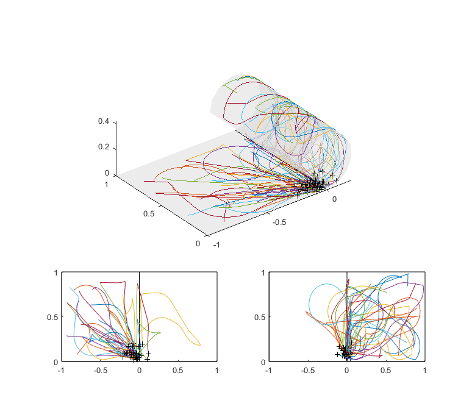
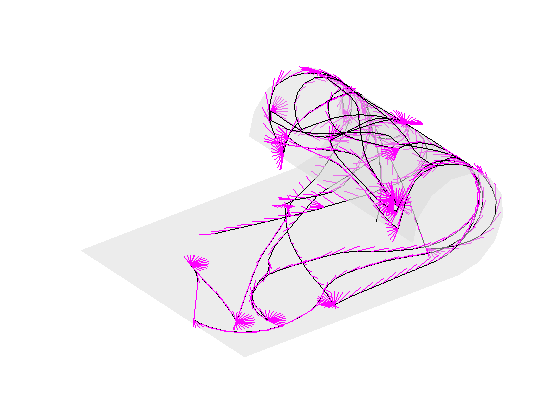
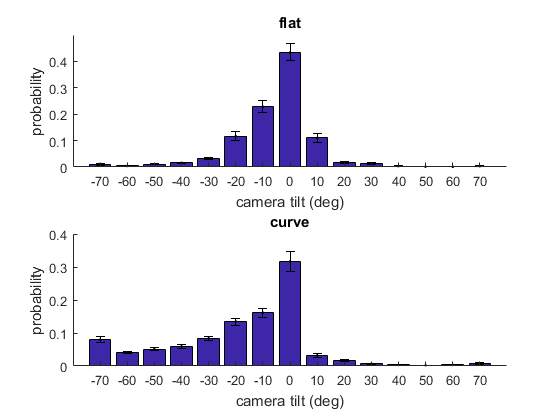
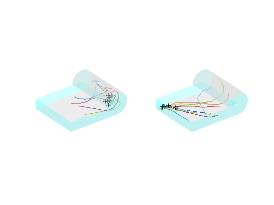
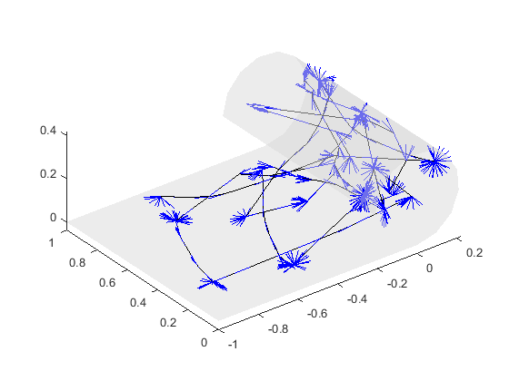

Contents
- Introduction
- Load data
- Prepare 3D mesh and object locations
- Exp 1. Movement trajectory for the middle objects (Supplemenatry Fig.1)
- Exp 2. Driving+looking movement trajectory (Supplementary Fig 2A)
- Exp 2. Drive+looking trajectory analysis (Supplementary Fig 2C)
- Exp 3. Flying movement trajectory (Supplementary Figure 4)
- Exp 3. Flying movement trajectory (in case somebody wants to analyse the rotation behaviour of flying participants, not included in the manuscript)
Introduction
- This is supplementary analysis script for my series of experiments on spatial memory on the non-flat surface. It visualises/quantify movement trajectory of participants while they were retrieving 8 objects location inside the virtual environment (Unity WebGL)
- Reference: Kim and Doeller (bioRxiv)_XX. doi:XX
- Dr. Misun Kim (mkim@cbs.mpg.de)
clear; close all;clc;
Load data
- All data (each task-familiarsiation, object-location test, distance estimation task) for each experimental version (drive/drive+look/fly, Path/Euclid) were collated into MATLAB struct variable.
- Load these all-in-one data file into workspace
expName={'drive+Path','drive+Euclid','drivelook+Path','drivelook+Euclid','fly+Euclid'};
for i=1:5
load(sprintf('../data/data_%s.mat',expName{i}),'alldata');
tmpAll{i}=alldata;
end
behAll{1}=[tmpAll{1},tmpAll{2}];% all participants for drive condition
behAll{2}=[tmpAll{3},tmpAll{4}];%all participants for drive/look condition
behAll{3}=tmpAll{5}; % all participants for fly condition
clearvars tmpAll alldata;
Prepare 3D mesh and object locations
Prepare 3D mesh (curved environment) for visualization later
objLoc2D=[0,0.95;0.9,0.95;0.9,0.05;0.7,0.75;0,0.05;-0.9,0.05;-0.9,0.95;-0.7,0.25];% normalised 2D coordinate for 8 objects % transform normalised 2D coordinate into 3D objLoc3D=[]; radius=1/pi*2/3; for i=1:size(objLoc2D,1) if (objLoc2D(i,1)<0) % flat part objLoc3D(i,:)=[objLoc2D(i,1:2),0]; else % curve part objLoc3D(i,:)=[sin(objLoc2D(i,1)*pi*3/2)*radius,objLoc2D(i,2),-cos(objLoc2D(i,1)*pi*3/2)*radius+radius]; end end % create 3D mesh of the cylinder structure [x_2D,y_2D]=meshgrid(-1:0.1:1,0:0.1:1); grid2D=[x_2D(:),y_2D(:)]; for i=1:size(grid2D,1) if (grid2D(i,1)<0) grid3D(i,:)=[grid2D(i,1:2),0]; else grid3D(i,:)=[sin(grid2D(i,1)*pi*3/2)*radius,grid2D(i,2),-cos(grid2D(i,1)*pi*3/2)*radius+radius]; end end vMat=grid3D; fMat=delaunay(x_2D,y_2D); % add the walls wall_x{1}=[-1,-1,-1,-1]; wall_y{1}=[0,0,1,1]; wall_z{1}=[0,0.2,0.2,0]; wall_x{2}=[0,-1,-1,0]; wall_y{2}=[0,0,0,0]; wall_z{2}=[0,0,0.2,0.2]; wall_x{3}=[0,-1,-1,0]; wall_y{3}=[1,1,1,1]; wall_z{3}=[0,0,0.2,0.2]; wall_x{4}=[-radius,-radius+0.2,-radius+0.2,-radius]; wall_y{4}=[0,0,1,1]; wall_z{4}=[radius,radius,radius,radius]; wall_x{5}=[sin(0:pi/6:3*pi/2)*(radius-0.2), sin(3*pi/2:-pi/6:0)*radius]; wall_y{5}=zeros(1,length(wall_x{5})); wall_z{5}=[-cos(0:pi/6:3*pi/2)*(radius-0.2)+radius, -cos(3*pi/2:-pi/6:0)*(radius)+radius]; wall_x{6}=[sin(0:pi/6:3*pi/2)*(radius-0.2), sin(3*pi/2:-pi/6:0)*radius]; wall_y{6}=ones(1,length(wall_x{6})); wall_z{6}=[-cos(0:pi/6:3*pi/2)*(radius-0.2)+radius, -cos(3*pi/2:-pi/6:0)*(radius)+radius]; textlabel={'1','2','3','4','5','6','7','8'}; % figure('Color','w'); % patch('Vertices',vMat,'Faces',fMat,'FaceColor',[0.85,0.85,0.85],'EdgeColor','none','FaceAlpha',0.5); % hold on; % for i=1:6 % patch(wall_x{i},wall_y{i},wall_z{i},[0.85,0.45,0.85],'EdgeColor','none','FaceAlpha',0.5); % end % view(3);axis equal; xlabel('X');ylabel('Y');zlabel('Z'); % figure('Color','w'); % plot([-1 1 1 -1 -1],[0 0 1 1 0],'k');hold on; % plot([0 0],[0 1],'k'); % xlabel('X');ylabel('Y');axis equal;xlim([-1.1,1.1]);ylim([-0.1,1.1]); % box off;
Exp 1. Movement trajectory for the middle objects (Supplemenatry Fig.1)
- trajectory for selected location for all participant in 3D
- trajectory for selected location for all participan in flatten view
- trajectory when participants started from the flat part
- trajectory when participants started from the curve part
whichobj=5;
alldata=behAll{1}; % driving condition
% prepare base figure
figure('Color','w','Position',[480,200,774,666]);
h1=subplot('Position',[0.17,0.42,0.65,0.42]);
patch('Vertices',vMat,'Faces',fMat,'FaceColor',[0.85,0.85,0.85],'EdgeColor','none','FaceAlpha',0.5);hold on
plot([0 0 0],[0 1 0],'k'); % midline
view(3); axis equal;
h2=subplot('Position',[0.13,0.11,0.33,0.22]); hold on;
plot([-1 1 1 -1 -1],[0 0 1 1 0],'k'); %boundary
plot([0 0],[0 1],'k'); %midline
h3=subplot('Position',[0.57,0.11,0.33,0.22]); hold on;
plot([-1 1 1 -1 -1],[0 0 1 1 0],'k'); %boundary
plot([0 0],[0 1],'k'); %midline
startdropCoord=NaN(length(alldata),4);
for sub=1:length(alldata)
tmptraj=alldata(sub).ObjLocTestTraj; % trajectory array
tmpsum=alldata(sub).ObjLocTestSum; % summary array containing target object, displacement erro, etc.
trialidx=ismember([tmpsum.target_x,tmpsum.target_y],objLoc2D(whichobj,:),'rows'); % get trial ID for 'whichobj' location
trialidx=tmpsum.trial(trialidx);
trialidx=trialidx(end); % choose the last trial for that object
tmpidx=tmptraj.trial==trialidx & tmptraj.phase==0;% idx for particular trial(trialidx), and the time period when participants were moving towards the remembered location (phase=0). cf. Phase=1 is the feedback phase when participants move towards the correct location of the object, phase=2 when they have arrived at the vicinity of the correct location and before they move onto the next trial; (phase 2 can be very short or absent)
tmpidx=find(tmpidx);
if tmpsum.distError(tmpsum.trial==trialidx)<0.25% only visualise those who placed the object at roughly right location
% tranform 2D coordinate into 3D
tmptraj3D=zeros(length(tmpidx),3);
for i=1:length(tmpidx)
if (tmptraj.current_x(tmpidx(i),1)<0)
tmptraj3D(i,:)=[tmptraj.current_x(tmpidx(i)),tmptraj.current_y(tmpidx(i)),0];
else
tmptraj3D(i,:)=[sin(tmptraj.current_x(tmpidx(i))*pi*3/2)*radius,tmptraj.current_y(tmpidx(i)),-cos(tmptraj.current_x(tmpidx(i))*pi*3/2)*radius+radius];
end
end
subplot(h1); plot3(tmptraj3D(:,1),tmptraj3D(:,2),tmptraj3D(:,3));
plot3(tmptraj3D(end,1),tmptraj3D(end,2),tmptraj3D(end,3),'Color','k','Marker','+'); % mark the end location of each participant
% visualise the trajectory separately for those who started from
% the curve and flat part
if tmptraj.current_x(tmpidx(1))<0 % when participant starts from the flat side of the environment
subplot(h2);
else % starting loation: curved side
subplot(h3);
end
hplot=plot(tmptraj.current_x(tmpidx),tmptraj.current_y(tmpidx));
hold on;
% add the final drop location with + marker
plot(tmptraj.current_x(tmpidx(end)),tmptraj.current_y(tmpidx(end)),'Marker','+','Color','k');
% save the start and drop location for each participant
startdropCoord(sub,:)=[tmptraj.current_x(tmpidx(1)), tmptraj.current_y(tmpidx(1)), tmptraj.current_x(tmpidx(end)),tmptraj.current_y(tmpidx(end))];
end
end
% axis equal;
% axis off;
 Exp 2. Driving+looking movement trajectory (Supplementary Fig 2A)
- Visualise the trajectory and vertical viewing of selected participant during familiarisation phase in driving+looking experiment
- Regarding the camera front facing 3D vector, /axisConvention3D.pdf can be helpful to understand the 3D rotation logic.
alldata=behAll{2}; % driving/looking condition
% prepare base figure
figure('Color','w');
patch('Vertices',vMat,'Faces',fMat,'FaceColor',[0.85,0.85,0.85],'EdgeColor','none','FaceAlpha',0.5);hold on
view(3);axis equal;
% for i=1:6
% patch(wall_x{i},wall_y{i},wall_z{i},[0.06,1,1],'EdgeColor','none','FaceAlpha',0.2);
% end
startdropCoord=NaN(length(alldata),4);
sublist=81;% representatitve subject (this subject's camera tilt distribution is most similar to the group averaged distribution);
for sub=sublist
tmptraj=alldata(sub).familiarTraj; %familiarisation phase
tmpidx=find(tmptraj.trial<inf); % include entire period
tmptraj3D=zeros(3,length(tmpidx));
arrowUp=zeros(3,length(tmpidx));
arrowFront=zeros(3,length(tmpidx));
arrowCamera=zeros(3,length(tmpidx));
for i=1:length(tmpidx)% tranform 2D coordinate into 3D
if (tmptraj.current_x(tmpidx(i),1)<0)
tmptraj3D(:,i)=[tmptraj.current_x(tmpidx(i)),tmptraj.current_y(tmpidx(i)),0];
surfacenormal=0; % 0deg tilt on the flat part of the environment
else
tmptraj3D(:,i)=[sin(tmptraj.current_x(tmpidx(i))*pi*3/2)*radius,tmptraj.current_y(tmpidx(i)),-cos(tmptraj.current_x(tmpidx(i))*pi*3/2)*radius+radius];
surfacenormal=-tmptraj.current_x(tmpidx(i))*270; % [0,1] relative coordinate on 270deg arc is transformed to [0, 270]deg
end
localAzi=tmptraj.current_heading(tmpidx(i));
localPit=tmptraj.cameraPit(tmpidx(i)); % Vertical tilt of camera relative to tangential surface
Ry=rotatematMK([0;1;0],deg2rad(surfacenormal)); %rotation matrix for rotating over y axis by surfacenormal angle(cylinder part)
unitUp=Ry*[0;0;1]; % upward direction of a participant's body (=surface normal)
unitFront=rotatematMK(unitUp,deg2rad(-localAzi))*[0;1;0]; %rotate the right/leftward at the tangent of surface around the upward body axis
unitRight=rotatematMK(unitUp,deg2rad(-localAzi-90))*[0;1;0]; %rightward vector of character body (pivot axis for camera pitch)
unitCamerafront=rotatematMK(unitRight,deg2rad(-localPit))*unitFront; % camera's forward facing direction, which is tilted up/downward
arrowLen=0.07;
arrowUp(:,i)=unitUp*arrowLen;
arrowFront(:,i)=unitFront*arrowLen;
arrowCamera(:,i)=unitCamerafront*arrowLen;
end
selectpoints=1:10:length(tmptraj3D); %only display every 10th timepoints to reduce clutter
% h1=plot3([tmptraj3D(1,selectpoints);tmptraj3D(1,selectpoints)+arrowUp(1,selectpoints)], [tmptraj3D(2,selectpoints);tmptraj3D(2,selectpoints)+arrowUp(2,selectpoints)], [tmptraj3D(3,selectpoints);tmptraj3D(3,selectpoints)+arrowUp(3,selectpoints)],'Color','k','LineStyle','-'); % show the upward vector of participant=surface normal
% h2=plot3([tmptraj3D(1,selectpoints);tmptraj3D(1,selectpoints)+arrowFront(1,selectpoints)], [tmptraj3D(2,selectpoints);tmptraj3D(2,selectpoints)+arrowFront(2,selectpoints)], [tmptraj3D(3,selectpoints);tmptraj3D(3,selectpoints)+arrowFront(3,selectpoints)],'Color','g','LineStyle','-'); % show the forward facing vector=yaw rotation on the surface
h3=plot3([tmptraj3D(1,selectpoints);tmptraj3D(1,selectpoints)+arrowCamera(1,selectpoints)], [tmptraj3D(2,selectpoints);tmptraj3D(2,selectpoints)+arrowCamera(2,selectpoints)], [tmptraj3D(3,selectpoints);tmptraj3D(3,selectpoints)+arrowCamera(3,selectpoints)],'Color','m','LineStyle','-'); % show the camera foward facing vector=vertical viewing behaviour
h4=plot3(tmptraj3D(1,selectpoints),tmptraj3D(2,selectpoints),tmptraj3D(3,selectpoints),'k');% trajectory of the center of the mass
% plot3(tmptraj3D(1,end),tmptraj3D(2,end),tmptraj3D(3,end),'Color','k','Marker','o');%display end location
% plot3(tmptraj3D(1,1),tmptraj3D(2,1),tmptraj3D(3,1),'Color','m','Marker','o');%display start location
axis off;
end
 Exp 2. Drive+looking trajectory analysis (Supplementary Fig 2C)
Summarise the vertical viewing angle on the flat and curved part. Hypothesis: participant's look upward on the curve part, and they remain parallel to the surface on the flat part
bins=-75:10:75;% bin for camera tilt angle histogram hist_famil=[];hist_famil_flat=[];hist_famil_curve=[]; hist_objloc=[];hist_objloc_flat=[];hist_objloc_curve=[]; for sub=1:length(alldata) tmptraj=alldata(sub).familiarTraj; %familiarisation phase cameraPit=tmptraj.cameraPit; cameraPit(cameraPit>180)=cameraPit(cameraPit>180)-360; %convert [0,360] to [-180,180] because it is more intuitive to check whether it's looking upwards (negative value) or downwards (positive value) hist_famil(sub,:)=histcounts(cameraPit,bins,'Normalization', 'probability'); % distribution of camera pitch with bins hist_famil_flat(sub,:)=histcounts(cameraPit(tmptraj.current_x<0),bins, 'Normalization', 'probability'); % distribution of camera pitch with bins -75:10:75 hist_famil_curve(sub,:)=histcounts(cameraPit(tmptraj.current_x>0),bins, 'Normalization', 'probability'); % distribution of camera pitch with bins -75:10:75 meanPit_famil(sub,1)=mean(cameraPit(tmptraj.current_x<0)); % mean tilt angle on the flat part meanPit_famil(sub,2)=mean(cameraPit(tmptraj.current_x>0)); % mean tilt angle on the curved part absPit_famil(sub,1)=mean(abs(cameraPit(tmptraj.current_x<0))); % magnitude of the tilt on the flat absPit_famil(sub,2)=mean(abs(cameraPit(tmptraj.current_x>0))); % magnitude of the tile on the curved maxPit_famil(sub,1)=max(cameraPit(tmptraj.current_x<0)); % max tilt of the tile on the flat maxPit_famil(sub,2)=max(cameraPit(tmptraj.current_x>0)); % max tilt of the tile on the cruved minPit_famil(sub,1)=min(cameraPit(tmptraj.current_x<0)); % max tilt of the tile on the flat minPit_famil(sub,2)=min(cameraPit(tmptraj.current_x>0)); % max tilt of the tile on the cruved tmptraj=alldata(sub).ObjLocTestTraj; %obj location test phase cameraPit=tmptraj.cameraPit; cameraPit(cameraPit>180)=cameraPit(cameraPit>180)-360; %convert [0,360] to [-180,180] because it is more intuitive to check whether it's looking upwards (negative value) or downwards (positive value) hist_objloc(sub,:)=histcounts(cameraPit,bins, 'Normalization', 'probability'); % distribution of camera pitch with bins -75:10:75 hist_objloc_flat(sub,:)=histcounts(cameraPit(tmptraj.current_x<0),bins, 'Normalization', 'probability'); % distribution of camera pitch with bins -75:10:75 hist_objloc_curve(sub,:)=histcounts(cameraPit(tmptraj.current_x>0),bins, 'Normalization', 'probability'); % distribution of camera pitch with bins -75:10:75 meanPit_objloc(sub,1)=mean(cameraPit(tmptraj.current_x<0)); % mean tilt angle on the flat meanPit_objloc(sub,2)=mean(cameraPit(tmptraj.current_x>0)); % mean tilt angle on the curved absPit_objloc(sub,1)=mean(abs(cameraPit(tmptraj.current_x<0))); % magnitude of the tile on the flat absPit_objloc(sub,2)=mean(abs(cameraPit(tmptraj.current_x>0))); % magnitude of the tilt on the curved maxPit_objloc(sub,1)=max(cameraPit(tmptraj.current_x<0)); % max tilt of the tile on the flat maxPit_objloc(sub,2)=max(cameraPit(tmptraj.current_x>0)); % max tilt of the tile on the cruved minPit_objloc(sub,1)=min(cameraPit(tmptraj.current_x<0)); % max tilt of the tile on the flat minPit_objloc(sub,2)=min(cameraPit(tmptraj.current_x>0)); % max tilt of the tile on the cruved end % option=[];option.plotdot=1;option.ticklabel={'flat','curve'}; % figure; % subplot(2,2,1);ttestplotMK2(meanPit_famil,option);ylabel('camera pitch(deg)'); % subplot(2,2,2);ttestplotMK2(absPit_famil,option);ylabel('magnitude of pitch(deg)'); % subplot(2,2,3);ttestplotMK2(meanPit_objloc,option);ylabel('camera pitch(deg)'); % subplot(2,2,4);ttestplotMK2(absPit_objloc,option);ylabel('magnitude of pitch(deg)'); figure; % camerat tilt during familiarisation phase bins_mid=0.5*(bins(1:end-1)+bins(2:end));%middle value of each bin subplot(2,1,1);bar(bins_mid,mean(hist_famil_flat,1));ylabel('probability');xlabel('camera tilt (deg)');title('flat'); hold on;errorbar(bins_mid,mean(hist_famil_flat,1),std(hist_famil_flat,0,1)/sqrt(size(hist_famil_flat,1)-1),'k.'); ylim([0 0.5]); box off; subplot(2,1,2);bar(bins_mid,mean(hist_famil_curve,1));ylabel('probability');xlabel('camera tilt (deg)');title('curve'); hold on;errorbar(bins_mid,mean(hist_famil_curve,1),std(hist_famil_curve,0,1)/sqrt(size(hist_famil_curve,1)-1),'k.'); ylim([0 0.4]); box off; % figure;% camera tilt during obj location test phase % subplot(2,1,1);bar(bins_mid,mean(hist_objloc_flat,1));ylabel('probability');xlabel('camera tilt (deg)');title('flat'); % hold on;errorbar(bins_mid,mean(hist_objloc_flat,1),std(hist_objloc_flat,0,1)/sqrt(size(hist_objloc_flat,1)-1),'k.'); % box off; % subplot(2,1,2);bar(bins_mid,mean(hist_objloc_curve,1));ylabel('probability');xlabel('camera tilt (deg)');title('curve'); % hold on;errorbar(bins_mid,mean(hist_objloc_curve,1),std(hist_objloc_curve,0,1)/sqrt(size(hist_objloc_curve,1)-1),'k.'); % box off;
Exp 3. Flying movement trajectory (Supplementary Figure 4)
- Visualise the example 3D trajectory of flying movement
- Display the trajectory for the target location on the flat and curve part separately because participants is unlikely to move up,down if both start and end location is on the flat part
- I can show either selected participants or all participants
alldata=behAll{3}; % fly condition
% prepare base figure
figure('Color','w');
for k=1:2
subplot(1,2,k);
patch('Vertices',vMat,'Faces',fMat,'FaceColor',[0.85,0.85,0.85],'EdgeColor','none','FaceAlpha',0.5);hold on
for i=1:6
patch(wall_x{i},wall_y{i},wall_z{i},[0.06,1,1],'EdgeColor','none','FaceAlpha',0.2);
end
view(3); axis equal;axis off;
end
rng(1);
sublist=randperm(length(alldata), 10);% for the visibility, display only a few random subject's trajectory
whichobjlist=[3,7];
for sub=sublist
for k=1:2;
tmptraj=alldata(sub).ObjLocTestTraj; % trajectory array
tmpsum=alldata(sub).ObjLocTestSum; % summary array containing target object, displacement erro, etc.
whichobj=whichobjlist(k);
trialidx=tmpsum.trial(tmpsum.targetLoc==whichobj); %search for the trial in target location is whichobj
trialidx=trialidx(end); % choose the last trial for that object
tmpidx=tmptraj.trial==trialidx & tmptraj.phase==0;% idx for particular trial(trialidx), and the time period when participants were moving towards the remembered location (phase=0). cf. Phase=1 is the feedback phase when participants move towards the correct location of the object, phase=2 when they already reach at the vicinity of the correct location and before they move onto the next trial; (phase 2 can be very short or absent)
tmpidx=find(tmpidx);
subplot(1,2,k);
if tmpsum.distError(tmpsum.trial==trialidx)<0.25% only visualise those who placed the object at roughly right location
tmptraj3D=[tmptraj.pos_x(tmpidx),tmptraj.pos_y(tmpidx),tmptraj.pos_z(tmpidx)];
plot3(tmptraj3D(:,1),tmptraj3D(:,2),tmptraj3D(:,3)); %visualise trajectory
plot3(tmptraj3D(end,1),tmptraj3D(end,2),tmptraj3D(end,3),'Color','k','Marker','+'); %mark the end location ofthe trajectory
end
end
end
% one can change the view angle to reproduce the Supple Fig4.
% view(0,0)//side view
% view(0,90)//top down view
 Exp 3. Flying movement trajectory (in case somebody wants to analyse the rotation behaviour of flying participants, not included in the manuscript)
- Visualise the 3D trajectory during familisarsation phase of flying movement
- In addition, visualise the camera facing direction of participants
- For axis and rotation convention, check /axisConvention3D.pdf
sub=1;% for the visibility display only few random subject's trajectory tmptraj=alldata(sub).familiarTraj; %familiarisation phase tmpidx=find(tmptraj.trial<inf); % include entire period tmpidx=find(tmpidx); tmptraj3D=[tmptraj.pos_x(tmpidx),tmptraj.pos_y(tmpidx),tmptraj.pos_z(tmpidx)]'; arrowCamera=zeros(3,length(tmpidx)); for i=1:length(tmpidx)% create front facing vector at each time point arrowFront=[0;1;0]; % camera facing vector was [0;1;0] (MATLAB axis convention) % In Unity, 3D rotation was applied by Y, X, and Z order (MATLAB axis % conventinon). 3D rotation is not-commutative, so one should be % careful when applying the rotation. rot_Y=rotatematMK([0;1;0],deg2rad(tmptraj.euler_y(tmpidx(i)))); rot_X=rotatematMK([1;0;0],deg2rad(tmptraj.euler_x(tmpidx(i)))); rot_Z=rotatematMK([0;0;1],deg2rad(tmptraj.euler_z(tmpidx(i)))); arrowLen=0.07; % length of arrow on the figure arrowCamera(:,i)=arrowLen*rot_Z*rot_X*rot_Y*arrowFront; %apply the Y rotation first, then X, and Z end % prepare base figure figure('Color','w'); patch('Vertices',vMat,'Faces',fMat,'FaceColor',[0.85,0.85,0.85],'EdgeColor','none','FaceAlpha',0.5);hold on view(3); axis equal; selectpoints=1:3:length(tmpidx); %only display every 3rd timepoints to reduce clutter plot3(tmptraj3D(1,selectpoints),tmptraj3D(2,selectpoints),tmptraj3D(3,selectpoints),'k');% trajectory of the center of the mass plot3([tmptraj3D(1,selectpoints);tmptraj3D(1,selectpoints)+arrowCamera(1,selectpoints)], [tmptraj3D(2,selectpoints);tmptraj3D(2,selectpoints)+arrowCamera(2,selectpoints)], [tmptraj3D(3,selectpoints);tmptraj3D(3,selectpoints)+arrowCamera(3,selectpoints)],'Color','b','LineStyle','-'); % show the forward facing vector